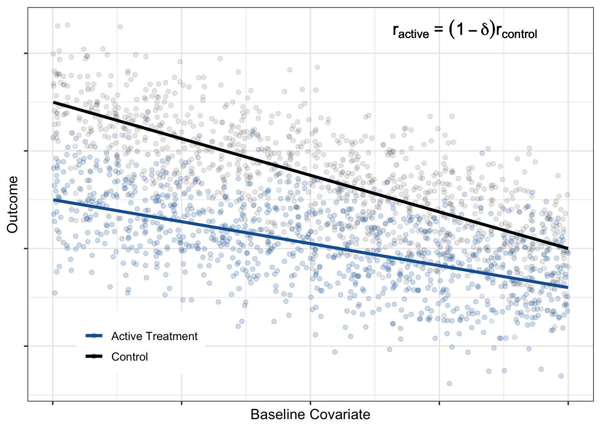

## SE estimate for treatment arm mean A=0
sqrt(mean(((A == 0) * (Y - pred0) / mean(A == 0) + pred0 - mean(pred0)) ^ 2) / nrow(d))
## SE estimate for treatment arm mean A=1
sqrt(mean(((A == 1) * (Y - pred1) / mean(A == 1) + pred1 - mean(pred1)) ^ 2) / nrow(d))
## SE estimate for the marginal ATE, the difference between treatment arm mean A=1 and A=0
sqrt(mean(((A == 1) * (Y - pred1) / mean(A == 1) + pred1 - mean(pred1) -
((A == 0) * (Y - pred0) / mean(A == 0) + pred0 - mean(pred0))) ^ 2) / nrow(d))New Insights into an Old Method
In randomized trials, a wide range of baseline covariates are collected prior to randomization. These include demographic variables, baseline outcome assessments, biomarkers from biological samples and medical images. Baseline covariates that are prognostic for trial outcomes are often used for enrichment, stratified randomization, imbalance checking and subgroup analyses. However, it is not widely recognized that one of the most powerful uses of prognostic baseline variables in randomized clinical trials is for covariate adjustment. A pre-specified primary endpoint analysis that adjusts for prognostic baseline covariates is a rigorous and virtually risk-free analysis that increases precision and power.
While the concept of covariate adjustment and its potential value for increasing trial power is decades old, historically there has been some controversy around how to ensure the validity of trial analyses without relying on model assumptions. This has been particularly challenging for non-continuous endpoints. Fortunately, there have been advancements that have resolved this controversy. Our first aim for this blog is to build on those advancements and provide concrete guidance on how to perform treatment effect estimation and inference using covariate adjustment that is both rigorous and easy-to-implement. In general, standard ANCOVA-based inference is correct when the regression model is correctly specified, whereas the covariate adjustment methods proposed here are asymptotically robust to model misspecification.
Furthermore, the pre-specified covariates that are currently used in clinical trials can be sub-optimal and strategies are needed to better determine which baseline covariates are best to use for adjustment. These baseline covariates could be a simple collection of individual variables or a single prediction from a complex machine learning model. External data, e.g. data from historical trials and observational studies, are an excellent resource for identifying and evaluating such candidate covariates. Accordingly, our second aim is to provide strategic guidance and relevant performance metrics for these evaluations.
This document will be a practical how-to guide for clinical trial statisticians on effective, trustworthy, and practical use of covariate adjustment in clinical development for maximizing power and minimizing bias. We will also discuss the value of stratified randomization compared to covariate adjustment. We focus here on continuous outcomes, but many of the points discussed apply to binary and ordinal outcomes as well.
Covariate Adjustment Has Gotten Hip
Covariate adjustment has recently gained popularity in a variety of industries. In drug development, the FDA has provided a draft guidance document that strongly encourages its use. There are also several start-ups who offer covariate adjustment to optimize analysis of online experiments as a key use case for their prognostic models (Wong, Lewis, and Wardrop 2019; Deng et al. 2013; Li, Tang, and Bauman 2020; Guo et al. 2022). Across these different applications, what statisticians and the FDA call covariate adjustment is frequently given alternative names, for example CUPED (controlled-experiment using pre-experiment data), CUPAC (Control Using Predictions As Covariates) and MLRATE (machine learning regression-adjusted treatment effect estimator). Companies like Owkin and Unlearn.AI focus on the use of covariate adjustment in randomized trials, hoping to potentially decrease trial sample size by incorporating machine learning (Trower, Balazard, and Patel 2020; Schuler et al. 2020).
We heartily celebrate this increased enthusiasm for covariate adjustment in a variety of settings and hope the current blog post enables clinical trial statisticians to make the most effective use of baseline prognostic data.
What’s the Big Deal About Covariate Adjustment?
Covariate Adjustment Increases Precision and Power
Unexplained variability in the outcome data limits the precision with which you can estimate your marginal average treatment effect (ATE). If baseline covariates are prognostic, subtracting off any reasonable linear combination of those covariates from the observed outcomes, and analyzing the differences instead reduces variability of the treatment effect estimate. The marginal ATE estimate calculated using the residuals (observed-predicted) is still asymptotically unbiased, because the expected value of the predictions is equal across all treatment arms. However, the residuals have less variability than the original outcomes, leading to a more precise estimate.
Covariate Adjustment Removes the Impact of Imbalance
A common concern in randomized trials is that treatment groups, by chance, differ in the distributions of one or more important prognostic baseline covariates. When this occurs, one perspective is that this is not a problem since the estimates are still unbiased and type 1 error is still preserved. However, such statistical properties are unconditional on the observed covariate imbalance. When we do condition on observed imbalance, the treatment effect estimates can be biased and type 1 errors can drastically differ from their nominal levels. A simple, clear and insightful analysis of this issue was provided by Stephen Senn who has amusingly remarked “If you are at 35,000 ft, four engines are on fire and the captain has had a heart-attack can you say: ‘Why worry, on average air travel is very safe?’” (S. J. Senn 1989; S. Senn 2010).
How do you address concerns over imbalance? Following the analysis from Stephen Senn, the figure above shows the conditional type 1 error as a function of standardized observed imbalance for a range of assumed correlations between the baseline covariate and outcome. This shows that significance tests for imbalance (a commonly used and misguided practice) can fail to flag imbalance effects even when the conditional probability of a type 1 error well exceeds the nominal level. Therefore, significance tests do not reliably control type 1 error. Instead, Senn showed that covariate adjustment removes conditional bias from treatment effect estimates and leads to correct conditional type 1 errors of constant size.
“Analysis of covariance can be recommended on two grounds: increased power and constant conditional size. The former should be sufficient to recommend the method to those who consider that the latter is irrelevant but for those who are concerned about conditional size this is an added advantage” (S. J. Senn 1989).
Covariate Adjustment is Rigorous
To address the historical confusion and controversy around covariate adjustment, methodological development has clearly specified the sampling framework, target estimand (i.e. population level parameter) and required assumptions. While we focus on continuous outcomes, the rigor of covariate adjustment also applies to non-continuous outcomes.
Sampling framework
An important but often overlooked component of specifying an estimand and estimator is the assumed sampling framework. A rigorous, adjusted analysis makes the assumed sampling framework transparent. There are several choices for the sampling framework, but we assume here the commonly used super-population framework. Let \(N\) be the total sample size for a randomized trial with several treatment arms and let \(A=0,1,\ldots,a\) be a random variable denoting treatment arm assignment. In the super-population framework, \(N\) full data vectors are assumed to be drawn independently from some unknown, joint distribution. Patient \(i's\) full data vector \((X_i, Y_i(0),Y_i(1),\ldots,Y_i(a))\) contains baseline covariates \(X_i\) and a potential outcome \(Y_i(k)\) for each possible treatment assignment \(k=0,1,\ldots,a\). Patient \(i's\) observed data vector \((A_i, X_i, Y_i)\) consists of their treatment assignment \(A_i\), baseline covariates \(X_i\) and observed outcome \(Y_i=Y_i(0)I(A_i=0)+\ldots+Y_i(a)I(A_i=a)\). In the case of simple random sampling, \(A\) and \(X\) are independent.
It is worth noting that rigorous theory behind covariate adjustment has also been developed under the Neyman framework, which assumes a fixed, finite population where the only source of randomness is treatment assignment (Lin 2013; Ding, Li, and Miratrix 2017, 2019).
Target Estimand
Confusion often arises since there are various kinds of covariate adjusted analyses targeting different estimands. For example, covariate adjustment is often used in the estimation of conditional average treatment effects, which are contrasts in treatment arm means that are conditional on baseline covariates. A conditional treatment effect is not a single value, but rather a function of baseline covariates, unless one makes the assumption that the conditional treatment effect is constant.
Conditional Average Treatment Effect
A contrast (difference, ratio, etc.) between treatment arm means conditional on baseline covariates. Example of a conditional ATE:
\[ E(Y_{active}|X) - E(Y_{control}|X) \tag{1}\]
However, in this document, we do not use covariate adjustment for that purpose. Instead, we us covariate adjustment as a tool to more efficiently estimate the marginal ATE:
Marginal Average Treatment Effect
A contrast (difference, ratio, etc.) between marginal treatment arm means. Example of a marginal ATE:
\[ E(Y_{active}) - E(Y_{control}) \tag{2}\]
Some researchers suggest focusing on estimating conditional treatment effects and using covariate adjustment for that purpose. While estimating conditional and individualized treatment effects is an important research objective, a discussion about how to do so is beyond the scope of this work. Here, we assume estimating the marginal ATE is the primary objective of a label-enabling clinical trial.
We note that the terms ‘marginal’ and ‘conditional’ are often conflated with ‘unadjusted’ and ‘adjusted’, however these terms are not synonymous (Daniel, Zhang, and Farewell 2020):
Marginal vs. Conditional
Used to distinguish different kinds of estimands.
Unadjusted vs. Adjusted
Used to distinguish different kinds of estimators.
Assumptions
Historically, researchers have debated how to safely estimate marginal ATEs using covariate adjustment. Some have been hesitant to use covariate adjustment over concerns around model misspecification, bias and possible losses in precision (D. A. Freedman 2008a; David A. Freedman 2008b), while others have enthusiastically used covariate adjustment without a second thought.
Academic research ultimately settled that debate (Yang and Tsiatis 2001; Tsiatis et al. 2008; Rosenblum and Laan 2009; Rosenblum and Laan 2010). A number of approaches to covariate adjustment have been characterized that result in consistent, asymptotically normal estimators of marginal ATEs even if the regression model is misspecified. This means that even if important interactions or non-linearities are excluded, prognostic factors are missed, or factors are included that have no prognostic value, covariate adjustment consistently estimates the marginal ATE.
The covariate adjustment approach we use is called a standardized regression estimator, which uses predictions from a working regression model to obtain marginal ATEs. The model is referred to as a working regression model because it does not have to represent the true data generating distribution. Therefore, we refer to covariate adjustment as a model-assisted, not model-dependent, analysis. Examples of working regression models include logistic, OLS, and Poisson regression models.
For the standardized regression estimator, it is sufficient to assume that treatment is assigned via simple random sampling, that the full data vectors are i.i.d. and that all variables are bounded (Rosenblum and Laan 2009; Rosenblum and Laan 2010). Extensions to other sampling frameworks have also been explored (Wang et al. 2021).
Covariate Adjustment is Encouraged by the FDA
In a 2021 draft guidance, pre-specified covariate adjustment was fully supported and encouraged by the FDA as a primary endpoint analysis in clinical trials:
“Although an unadjusted analysis is acceptable for the primary analysis, adjustment for baseline covariates will generally reduce the variability of estimation of treatment effects and thus lead to narrower confidence intervals and more powerful hypothesis testing” (FDA 2021).
Importantly, the guidance states that “[s]ponsors should prospectively specify the covariates and the mathematical form of the covariate adjusted estimator” (FDA 2021). We interpret this to mean that the exact working regression model form should be pre-specified before working with the trial data. Independent data from observational cohorts or previous trials can be used to select or develop covariates. These covariates may be existing baseline variables or even the output from a multivariable prediction model which takes as input other baseline covariates.
In contrast to pre-specifying an ANCOVA regression model, there is active research into applying machine learning directly to the unblinded trial data under investigation (as opposed to historical data) (Williams, Rosenblum, and Diaz 2021; Benkeser et al. 2020; Tsiatis et al. 2008; Tian et al. 2012) as part of the covariate adjusted analysis. While the role machine learning procedures can play in covariate adjustment is an interesting and important area of research, we do not yet recommend using them as part of the primary endpoint analysis of a clinical trial due to several considerations. First, the finite sample properties of the estimators are not understood. Second, these methods add complexity and burden to the study yet are unlikely to provide meaningful benefits.
It may not be appreciated that a lot of things need to happen between the unblinding of a randomized clinical trial and the reporting of topline results. Outputs and code are quality controlled, pre-specified sensitivity analyses are performed, and internal reviews are conducted with key decision makers and stakeholders. All of these activities need to occur in a tight time frame for practical considerations such as appropriate control of insider information.
In addition, during the planning phase, many choices have to be made when applying machine learning directly to the trial data such as which covariates to present to the machine learning procedure, the method of cross validation to use, which machines to include if using ensemble learning and how to perform standard error estimation. These choices, many of which are based on simulation studies, add to the difficulty of finalizing the statistical analysis plan.
In summary, applying machine learning to the trial data as part of the primary endpoint analysis adds considerable burden to the study team. This added burden would only be worthwhile if the expected precision gains were meaningful. However, in our experience, complex black-box models rarely outperform simple linear models when working with tabular data and do not support this additional complexity and time.
How to Perform Covariate Adjustment
Standardized Regression Estimator
Table 1 provides instructions and code for estimating the Treatment Arm Means (TAMs) and the marginal ATE (in this case, the difference in means) using covariate adjustment. The example code shows how to estimate these quantities for trials with two treatment arms, but easily generalizes to more than two arms. This estimator is often referred to as the standardized regression estimator, and is also an example of a targeted maximum likelihood estimator. There are other consistent estimators of the marginal ATE that use covariate adjustment (see Colantuoni and Rosenblum (2015) for examples). However, we suggest using the standardized regression estimator because it is easy to use, “statistically reliable” (FDA 2021), has comparable power and can also be used to estimate TAMS and marginal ATEs for non-continuous outcomes.
In the notation below, \(A\) is a two-level factor indicating treatment assignment, \(Y\) is the observed outcome, \(X\) is a baseline covariate, \(E[Y|a, X_i] = \mu(a,X_i)\) is the expected value of \(Y\) for patient \(i\) given their treatment assignment \(A_i=a\) and baseline covariate \(X_i\), \(\hat{\mu}(a,X_i)\) is the predicted outcome for patient \(i\) from the working regression model and an estimate of \(\mu(a,X_i)\), and \(N\) is the total trial sample size. The standardized regression estimator for the mean outcome in treatment arm \(A=a\) is:
\[ \widehat{TAM_a}=\frac{1}{N}\sum_{i=1}^{N}\hat{\mu}(a,X_i) \tag{3}\]
The standardized regression estimator for the difference in means for treatment arms \(A=0\) and \(A=1\) is:
\[ \widehat{ATE}=\frac{1}{N}\sum_{i=1}^{N}\hat{\mu}(1,X_i)-\frac{1}{N}\sum_{i=1}^{N}\hat{\mu}(0,X_i) \tag{4}\]
Other contrasts of the marginal means (TAMs) may be similarily estimated.
| Step | Estimation Instructions | Example R Code | |
|---|---|---|---|
| 1 | Fit a working regression model using data from all treatment arms, regressing the outcome on treatment and prognostic baseline covariates | |
|
| 2 | For each subject, use the model from step 1 and the subject’s baseline covariates to compute their predicted outcome under EACH treatment of interest (regardless of what their assigned treatment was) | |
|
| 3 | Take the average of the predicted outcomes in each treatment group to get estimates of the Treatment Arm Means (TAMs) | |
|
| 4 | Compute the desired contrast of the TAMs to get an estimate of the marginal ATE | |
|
In the example code in Table 1, \(X\) is a single covariate, but \(X\) can also be a matrix containing a set of individual covariates, a prediction from an independent prognostic model, or a combination thereof. When the working regression model is an additive OLS regression, the standardized regression estimate of the difference in means marginal ATE equals the estimated coefficient for \(A\). This is also true for an interaction model when the covariates are centered. Note that, unlike OLS regression, in generalized linear models the estimated coefficient for treatment does not translate into a marginal ATE.
Theoretically, it is possible to lose precision with covariate adjustment when using an additive model compared to an unadjusted analysis. In contrast, a standardized regression estimator that uses an interaction working regression model is asymptotically guaranteed to be at least as precise as an unadjusted estimator or adjustment with an additive model. However, it is only under unrealistic conditions that covariate adjustment with an additive model will be less precise than an unadjusted estimator. What is more, if randomization is 1:1 or the covariances between covariates and outcome are equal across treatment arms, then covariate adjustment with an additive model will be as efficient as with an interaction model. In our experience, interaction models do not lead to considerable gains in precision over additive models. Likewise, Tsiatis et al. (2001) performed simulations comparing precision when using an additive vs. an interaction model and “found the loss of efficiency to be trivial in all cases” (Yang and Tsiatis 2001). Therefore, additive models are a good default choice especially if your trial sample size is too small to support treatment-by-covariate interactions (see model budget section).
In case of missing values in baseline covariates, the FDA draft guidance suggests that “covariate adjustment is generally robust to the handling of subjects with missing baseline covariates. Missing baseline covariate values can be singly or multiply imputed, or missingness indicators (Groenwold et al. 2012) can be added to the model used for covariate adjustment. Sponsors should not perform imputation separately for different treatment groups, and sponsors should ensure that imputed baseline values are not dependent on any post-baseline variables, including the outcome” (FDA 2021). A baseline covariate that has too many missing values should not be used for adjustment, but if the number of missing values is small, we recommend simple, single imputation as opposed to using indicator variables in order to spend the model budget wisely.
Inference for TAMs and ATEs
We suggest using robust standard error estimators from the targeted maximum likelihood estimation (TMLE) literature because they are robust to model misspecification, are fast and easy to implement with a few lines of code, are valid under any randomization ratio and data generating distribution, provide standard error estimates for both ATEs and treatment arm means, are aligned with the superpopulation framework and are deterministic.
Let \(I(A_i=a)\) be an indicator of patient \(i\) receiving treatment \(A=a\) and \(p(A=a)\) be the probability of being assigned to treatment arm \(A=a\). The TMLE standard error estimate for the mean of treatment arm \(A=a\) is:
\[ \sqrt{\frac{\frac{1}{N}\sum_{i=1}^{N}\Bigg(\frac{I(A_i=a)(Y_i-\hat{\mu}(a,X_i))}{p(A=a)}+\hat{\mu}(a,X_i)-\frac{1}{N}\sum_{i=1}^{N}\hat{\mu}(a,X_i)\Bigg)^2}{N}} \tag{5}\]
The standard error estimate for the difference in Means for Treatment arms \(A=1\) and \(A=0\) is:
\[ \sqrt{\frac{\frac{1}{N}\sum_{i=1}^{N}\Bigg(\frac{I(A_i=1)(Y_i-\hat{\mu}(1,X_i))}{p(A=1)}+\hat{\mu}(1,X_i)-\frac{1}{N}\sum_{i=1}^{N}\hat{\mu}(1,X_i) - \Big(\frac{I(A_i=0)(Y_i-\hat{\mu}(0,X_i))}{p(A=0)}+\hat{\mu}(0,X_i)-\frac{1}{N}\sum_{i=1}^{N}\hat{\mu}(0,X_i)\Big) \Bigg)^2}{N}} \tag{6}\]
The code for the above SE estimators is shown below.
Using the estimated standard errors and the asymptotic normality of the standardized regression estimator, one can then easily obtain \(p\)-values and \(95\%\) confidence intervals for both the treatment arm means and the marginal ATE.
We note that the above standard error estimates assume observations are i.i.d. (i.e. randomization is not stratified), and we address this assumption in a later section. For standard error estimates corresponding to marginal ATEs using different contrasts (e.g. ratio instead of difference) see Rosenblum and van der Laan (2010).
Alternative standard error estimators include the Huber-White estimator and re-sampling based methods like the non-parametric bootstrap. In their recent guidance, the FDA recommends using the Huber-White robust “sandwich” estimator instead of nominal standard error estimates from statistical software (FDA 2021). However, if using a working regression model with treatment-by-covariate interactions, the expected sandwich standard error estimates may be too small when treatment effects are heterogeneous (see Appendix and Imbens and Wooldridge (2009) , Lin (2013)). Bootstrap methods are a reasonable alternative, but we prefer TMLE estimators since they are easier to implement and less computationally intensive. Furthermore, bootstrap methods lead to confidence intervals and p-values that are not deterministic. An intriguing alternative to the bootstrap that is deterministic is the jackknife (Wolbers et al. 2022).
Determining your Model Budget
Is there such a thing as adjusting for too many prognostic covariates? Yes! The marvelous properties of covariate adjustment discussed thus far (consistency, robustness to model misspecification, precision gains, etc.) are large sample properties. Thus, adjusting for too many covariates in your working model relative to your sample size may invalidate the analysis (Rosenblum 2020; Colantuoni and Rosenblum 2015; Rosenblum and Steingrimsson 2016), and the FDA advises against adjusting for too many covariates:
“The statistical properties of covariate adjustment are best understood when the number of covariates adjusted for in the study is small relative to the sample size.”(FDA 2021)
Explicit guidance on how many covariates to adjust for is not offered, so we borrow from prognostic modeling practices (Harrell 2011).
Model Budget
The number of allowable terms in the working regression model, excluding the overall intercept. Suggestions for a model budget based on classic events per variable considerations are (Harrell 2011):
| terms (% of total sample size) | guidance | |
|---|---|---|
| \(\leq 5\%\) | likely a safe choice | |
| \(\approx7.5\%\) | probably reasonable | |
| \(\gt 10\%\) | potentially unsafe |
Pre-specifying a set of covariates and a working regression model form that satisfies the model budget maintains the rigor and integrity of the statistical analysis. We note that this is a rough guidance and should be considered a useful starting point. Recently, model budget calculations for general prognostic modeling have been refined and in future work it would be helpful to adapt such an approach to covariate adjustment (see R. D. Riley et al. (2019) and R. Riley et al. (2020)).
Spending your Model Budget Wisely
The model budget tells you how complex the working regression model can be while ensuring treatment effect estimates are unbiased, confidence intervals have good coverage, and type 1 error rates for hypothesis testing do not exceed nominal levels. However, there are many options when pre-specifying the working regression model and it is easy to spend beyond one’s model budget, so strategic choices will need to be made prior to looking at the data.
We suggest determining the model form and spending the model budget according to the following four principles:
Leverage external/historical data
Historically, pre-specification of a regression model was guided by ad hoc analyses reported in the literature, input from subject matter experts, and precedent set by previous trials. While these continue to be important considerations, big data collection and curation and the introduction of machine learning methods to drug development significantly improve the process of pre-specifying the regression model form.Prioritize maximally prognostic covariates
The list of candidate prognostic covariates may be too large according to the model budget, in which case a subset of prognostic covariates will need to be selected. We use external/historical data to guide that selection (see upcoming section on Performance Metrics).
Pro Tip
If the model budget is tight and several covariates are expected to meaningfully add prognostic value, consider combining them into a single score and using that in the model instead of the individual covariates.
Avoid Dichotomania!
Usually the relationship between a continuous variable and outcome varies gradually and abrupt dichotomization loses prognostic information Stephen J. Senn (2005). We recommend that, unless there is evidence to the contrary, prognostic covariates that have been discretized be replaced with their underlying continuous forms. Note that, in particular, this will impact how stratification factors enter into the model.By default, do not include interactions between covariates
There is a large body of evidence showing that for tabular data, purely additive models are very rarely, if ever, meaningfully improved by including interactions (Rudin 2019). This has also been our experience with many prognostic modeling projects. We do not recommend including interactions between prognostic covariates in the model since these are usually wasteful expenses in the model budget, unless evidence to the contrary is available.By default, do not include interactions between covariates and treatment arm
As discussed above, such interactions rarely provide meaningfully improved precision and power under realistic assumptions.
Use the above five principles to pre-specify a working regression model and to spend your model budget wisely. Then, use this model in the previously described standardized estimator to estimate the treatment arm means and marginal ATEs and to perform inference.
Accounting for Stratified Randomization
The estimation and inference procedures described in the previous sections assume simple randomization, where each patient’s treatment assignment is an independent and identically distributed Bernoulli random variable for a trial with two treatment arms and a categorical random variable for a trial with more than two treatment arms. However, randomization in clinical trials is usually stratified by selected baseline covariates, for example, using permuted block randomization. In this case, the FDA recommends that the standard error estimation “account for the stratified randomization (Bugni et al. 2018) with or without strata variables in an adjustment model. Otherwise, the standard error is likely to be overestimated and interval estimation and hypothesis testing can become unduly conservative” (FDA 2021).
However, we recommend that it is NOT necessary to modify estimation and inference to account for stratified randomization. Instead, we propose that the previously described strategy for spending the model budget wisely be used and applied to all prognostic candidates, making no distinction between stratification factors and other baseline covariates. Then use covariate adjustment as described in the previous sections for estimation and inference of the marginal ATEs, as if treatment were allocated using simple random sampling.
Note that, as a consequence:
- By default, if stratification variables do enter into the working regression model, they will do so as additive terms.
- Dichotomized stratification factors will be replaced by their underlying continuous variables.
- Stratification variables not expected to be correlated with outcome in any treatment group may be omitted entirely.
Such an approach still maintains type 1 error and leads to consistent estimators for marginal ATEs. At worst, inference is conservative (p-values may be too large and confidence intervals too wide) (Wang et al. 2021). However, if the model budget is spent wisely to obtain a sensible working regression model, conservatism will be negligible.
Performance Metrics
Intuitive Metrics for Quantifying the Expected Benefit of Adjustment
When analyzing external/historical data in preparation for pre-specifying a covariate-adjusted primary endpoint analysis, it’s important to understand the following:
- Which covariates to adjust for
- The expected precision gains from adjustment
Below, we provide performance metrics that allow study statisticians to easily select which covariates to adjust for, to understand the impact of heterogeneous treatment effects (HTEs) on precision gains and to estimate the expected benefit from adjustment without having to perform simulations.
A great way to derive a single, high-quality covariate is to use external data to construct a prognostic model that combines multiple covariates into a single prognostic score. Thus, we focus here on how to evaluate a single prognostic covariate. However, if the model budget allows and the prognostic model is originally linear in form, the individual covariates can be expanded out in the working regression model and re-fit, usually with no loss in performance.
For practical use in a trial, prognostic models should achieve maximum performance with minimal complexity. Complexity is determined by the:
- Cost, incovenience, and invasiveness of covariates.
- Ease of deployment and implementation of the prognostic model.
- Algorithmic complexity (e.g. linear models vs deep learners).
We find that linear prognostic models are hard to beat when working with tabular data. Deep learning models are more likely to provide a boost in performance over linear models when working with imaging data. Deep learners are natural candidates when working with non-tabular data, such as raw image files. Later we will show an example where considerable gains are achieved using a deep learner trained to predict progression in an ophthalmologic disease from raw images.
An intuitive metric for the expected benefit of a prognostic score is the amount by which it effectively increases the study’s sample size via the gain in precision, i.e. the Effective Sample Size Increase (ESSI). For example, suppose adjusting for a particular covariate is associated with an estimated ESSI of \(40\%\). That means, asymptotically, the following two analyses have the same power:
- A covariate-adjusted analysis with sample size \(N\)
- An unadjusted analysis but with \(40\%\) more patients, \(1.4 * N\)
ESSI estimates can be used to compare sets of covariates or prognostic models and make transparent the expected benefits of adjustment.
ESSI Formulas
For simplicity, we assume 1:1 randomization and equal, marginal variances across the treatment arms. We also provide ESSI formulas that relax these assumptions.
It turns out that the ESSI from covariate adjustment for continuous outcomes can be easily estimated since it only depends on two parameters:
General ESSI
\[ General \space ESSI=\Bigg(\frac{1}{1 - \big(\frac{r_{control} \space + \space r_{active}}{2}\big)^2}-1\Bigg) * 100\% \tag{7}\]
\[ \begin{align*} \text{where} \\ r_{active} &= \text{Correlation between the outcome and covariate in the active,} \\ r_{control} &= \text{Correlation between the outcome and covariate in the control arm} \end{align*} \]
It makes intuitive sense that the ESSI depends on the squared average of the correlations in the two treatment arms, increasing as the correlations increase. The correlation between the covariate and the outcome among untreated patients (\(r_{control}\)) can be estimated using historical trial data, observational cohorts, etc.
This leaves \(r_{active}\) as the only quantity left to estimate. To help estimate \(r_{active}\), note that the correlation between the outcome and the covariate in the treatment arm depends on the “treatment effect scenario.” Two plausible treatment effect scenarios are discussed in the following sections.
Constant absolute treatment effect
One commonly assumed treatment effect scenario is that the absolute treatment effect is constant across the baseline covariate:
Constant absolute treatment effect:
\(E(Y_{active}|X)=E(Y_{control}|X)-\delta\), for some constant \(\delta\). With a constant absolute treatment effect, \(r_{control}=r_{active}\). Plugging this into the general ESSI formula we get
\[ ESSI \space Assuming \space Constant \space Absolute \space \delta =\Bigg(\frac{1}{1-r^2_{control}}-1\Bigg) * 100\% \tag{8}\]
Constant proportional treatment effect
A second plausible treatment effect scenario is that the relative treatment effect is constant across the baseline covariate:
Constant proportional treatment effect
\(E(Y_{active}|X)=(1-\delta)E(Y_{control}|X)\), for some constant \(\delta\). With a constant proportional treatment effect, \(r_{active}=(1-\delta)r_{control}\). Plugging this into the general ESSI formula we get
\[ ESSI\space Assuming \space Constant \space Proportional \space \delta=\Bigg(\frac{1}{1-r^2_{control}\big(1-\frac{\delta}{2}\big)^2}-1\Bigg) * 100\% \tag{9}\]

Impact of HTEs on gains from covariate adjustment
A constant proportional treatment effect is an example of HTEs. A treatment effect is heterogeneous if the magnitude of the treatment effect (on the absolute scale) depends on the value of the baseline covariate. HTEs decrease the precision gains from adjustment. For example, notice how, in the constant proportional treatment effect formula, the ESSI decreases as \(\delta\) increases (i.e. as heterogeneity increases). It is important to recognize the impact of HTEs when making decisions about reducing sample size in anticipation of increased power due to covariate adjustment.
A Hypothetical Example
Suppose you are working on pre-specifying an adjusted analysis for an upcoming phase 2 trial. Assume that the targeted effect size is a \(25\%\) reduction in mean decline in the treatment arm compared to the mean decline in the placebo arm for a progressive disease that has a continuous outcome measure. Furthermore, assume that you have developed a prognostic model using external/historical data and that the estimated correlation between the prognostic model predictions and the outcome was \(0.45\) (\(r^2_{control}\approx0.2\)). The following is an example of how to calculate ESSIs from covariate adjustment under two plausible treatment effect scenarios that are consistent with the targeted effect size:
| Treatment Effect Scenario | \(r_{control}\) | \(r_{active}\) | ESSI |
|---|---|---|---|
|
Constant Absolute Delta \(E(Y_{active}|X)=E(Y_{control}|X)-\delta\) |
\(0.45\) | \(0.45\) |
\(\Big(\frac{1}{1-r^2_{control}}-1\Big)*100\%=\) \(\Big(\frac{1}{1-{0.2}}-1\Big)*100\% =\) \(25\%\) |
|
Constant Proportional Delta \(E(Y_{active}|X)=(1-\delta)E(Y_{control}|X)\) |
\(0.45\) |
\((1-\delta)r_{control} =\) \((1-.25)*0.45\) |
\(\Bigg(\frac{1}{1-r^2_{control} \; \; \big ( 1-\frac{\delta}{2}\big)^2}-1\Bigg)*100\%=\) \(\Bigg(\frac{1}{1-0.2\big(1-\frac{\delta}{2}\big)^2}-1\Bigg)*100\% =\) \(18\%\) |
| No Correlation in Treatment Arm | \(0.45\) | \(0\) |
\(\Bigg(\frac{1}{1-\frac{r^2_{control}}{4}}-1\Bigg)*100\%=\) \(\Bigg(\frac{1}{1-\frac{0.2}{4}}-1\Bigg)*100\% =\) \(5\%\) |
Assuming a constant absolute delta, the effective sample size increase from covariate adjustment is expected to be \(25\%\). However, with a constant proportional treatment effect (which implies HTEs), the ESSI decreases to \(18\%\). A third, not entirely unrealistic worst-case scenario of no correlation between the covariate and outcome in the active treatment arm reduces the ESSI to just \(5\%\). The drop in ESSI with HTEs would be an important caveat to communicate if there is a temptation to decrease trial sample size.
All ESSI formulas assume a particular pattern of HTEs. Due to the risk of under-powering, if no prior data is available on HTEs, we do not routinely recommend reducing sample sizes for Phase 2 trials. Usually when designing a Phase 3 trial, there are data from earlier studies on HTEs that can be used to get direct estimates of HTEs and improve ESSI estimates. These improved ESSI estimates could be used to inform sample size reduction, if other trial requirements allow for it (e.g. safety and subgroup analyses). Whenever sample size is reduced, be sure to communicate these risks, consider the noise in ESSI estimates and study-to-study effects and tailor sample size reductions accordingly.
Application to Geographic Atrophy (GA)
Geographic atrophy (GA) is an advanced form of age-related macular degeneration (AMD) and is a major cause of blindness in developed countries worldwide. GA progression is assessed by GA lesion growth from baseline over time using Fundus Autofluorescence (FAF) images. This is usually the primary endpoint in clinical trials that evaluate treatment effects on progression.

Because GA progression is slow and varies between patients, clinical trials need to enroll many patients and follow them over a long period of time. Most recent GA trial designs followed patients for 12-18 months for the primary efficacy endpoint. However, the within patient noise of measuring GA progression over time is small and GA lesions progress linearly over the duration of the trial, making this a promising problem for a prediction model. This also allows us to use slopes calculated for each patient as the outcome for the prognostic modeling. Clinical trials often use change from baseline in GA area or slopes as outcomes, and sensitivity analyses showed that those are highly correlated and results are very similar for both. For simplicity, we will show the results for predicting the individual slopes.
Prognostic Model Development
The modeling and data strategy was pre-specified and allowed a rigorous and fair comparison of a number of models with different levels of complexity and operational burden. The goal was to find the least complex model with the best performance.
Data from a previous GA development program was harmonized and divided into training, hold-out, and independent test sets as shown in the figure. The independent tests sets consisted of two studies that were entirely excluded from the training and hold-out evaluations. Within the training data set, models were trained using additional re-sampling techniques for parameter tuning and performance estimation.
During training a model was selected from each of three model groups for hold-out and independent test set evaluation. These model groups were defined as:
- Model Group 1 (Benchmark): The first group of models was based on a set of standard, pre-specified features that are assessed at baseline. Various types of models were evaluated and compared, from a simple linear model to different types of machine learning models (e.g. support vector machines, gradient boosted machines, random forests, etc.). The features were:
- Demographics: age, sex, smoking status
- Measures of visual acuity: best corrected visual acuity (BCVA), low luminance visual acuity (LLVA), low luminance deficit (LLD = BCVA - LLVA)
- Anatomical features assessed by a reading center: lesion size, lesion contiguity, lesion location, lesion distance to fovea, reticular pseudodrusen
- Model Group 2 (Benchmark + Run-in): This group additionally included a “run-in” estimate of growth rate, i.e. using the first 6 month to estimate the GA growth rate and predicting the future. Note that this required re-baselining the remaining outcome data to the 6 month time point. Due to the linear growth and low within patient noise, this is a promising approach but operationally complex to include in a trial as it requires high quality historical images from patients, or starting the trial with a pre-treatment run-in period, which may slow trial recruitment and delay the trial readout.
- Model Group 3 (DL Models): The third group of models consists of end-to-end deep learning (DL) models from FAF and also OCT images at baseline. Three types of models were developed (each exploring different architectures): using FAF only, using OCT only and using FAF and OCT together (Anegondi et al. 2022). The FAF only model would be the operationally preferred model.
One model was selected from each model group using the relevant performance metrics (\(r^2\) and ESSI) estimated using re-sampling techniques. The three selected models were then tested and compared on the holdout and independent test sets.
Results
The selected models were:
- Model Group 1 (Benchmark): A simple linear model with four features (lesion size, lesion contiguity, lesion distance to fovea and LLD) gave the best performance. More complex models like tree based models or added features did not add performance.
- Model Group 2 (Benchmark + Run-in): A simple linear model with the four features from model group 1 and an estimate of growth rate as an additional fifth feature.
- Model Group 3 (DL Models): A multi-task DL (CNN) model that uses a single FAF image as input to predict GA lesion size (same image) and GA growth rate (Anegondi et al. 2022).
The results were quite impressive; although operationally complex to implement, the run-in model appears to effectively increase the sample size by \(1/3\) compared to an analysis using the benchmark model. If no DL FAF model were available, the additional complexity of the run-in might be justified by the \(ESSI\). However, the DL FAF model outperformed the benchmark and even the benchmark+run-in model in the hold-out as well as the two independent test sets (Anegondi et al. 2022). This implies that the logistical complexities of the run-in model can be avoided with the DL FAF model, which is based on a single baseline time point and is still relatively simple to implement (Anegondi et al. 2022). The table shows that the DL FAF model substantially increases the ESSI by at least 90% when compared to an unadjusted analysis and by 40%-80% compared to a simple adjustment using the known baseline features.
Model in Action
The MAHALO study independent test set shown in the previous section was the Phase 2 trial for Lampalizumab. There was an observed treatment effect of ∼20% slowing progression in the higher dose (LQ4 - monthly treatment) compared to the Sham (no treatment) arm. This effect was not confirmed by the two large global Phase 3 trials (SPECTRI and CHROMA), so in retrospect we know this was a false-positive result. When the decision was made to move forward with a Phase 3 trial, the DL FAF model was not available. However, it is an interesting post-hoc exercise to see how results from the Phase 2 trial would have changed had the DL FAF model been used for covariate adjustment.
The figure below shows the estimated mean changes in GA lesion size with and without adjusting for the FAF DL model. Covariate adjustment leads to better precision and hence tighter confidence intervals for the treatment effect estimate and also changes the estimate in case of imbalances. In this example, the estimate changes (from 20% to 6%) and becomes non-significant (a p-value threshold of 0.2 is usually used in a Phase 2 trial).
While there were many other considerations in the decision to move into Phase 3 trials (e.g. subgroup analyses), if results from the adjusted analysis had been available, Phase 3 decision making may have been different.
Brief Recap
Below is a brief outline summarizing how to get the most out of prognostic baseline variables via covariate adjustment:
- Analyze external/historical data
- build a score/model
- evaluate with ESSIs
- Determine model budget
- use methods developed for prognostic modeling
- Spend the model budget wisely
- choose the most prognostic factors among stratification and other prognostic variables
- avoid dichotomania
- by default, do not use interactions
- Estimate ATEs and TAMs
- use standardized estimator
- also works for non-continuous outcomes
- Inference for ATEs and TAMs
- suggest SE estimates from TMLE literature
- re-sampling methods are also an option
Discussion
Covariate adjustment is a statistical free lunch. You can enjoy a rigorous, model-assisted analysis that increases precision and power, accounts for conditional bias and is supported by regulatory authorities at virtually no cost. With the growing availability of high-quality data for the identification of robust prognostic covariates, the benefits of an adjusted analysis will only continue to increase. We focused here on continuous endpoints, however the same standardized estimator and variance estimates can be applied to non-continuous outcomes (e.g. binary or ordinal) by substituting in the appropriate generalized linear “working” model and making minor adaptations in the standard error estimates (Rosenblum and Laan 2010). ESSI formulas for non-continuous outcomes are a work-in-progress. While the concept of covariate adjustment has been around for decades, it seems to be underutilized or sub-optimally implemented (e.g. poor choice of covariates). We hope this guidance makes it clear how to rigorously implement covariate adjustment in randomized trials and encourages statisticians to take advantage of all of the benefits of adjusted analyses for randomized clinical trials.
Acknowledgements
Roche GA Development Team: Neha Anegondi, Lee Honigberg, Simon Gao, Qi Yang, Daniela Ferrara, Julia Cluceru, Verena Steffen
Methods, Collaboration, Outreach (MCO): Ray Lin, Marcel Wolbers
Website Development: Doug Kelkhoff
Appendix
ESSI Formulas
- \(Y\) continuous outcome, \(X\) baseline covariate
- Constant absolute \(\delta\): \(E(Y_{active}|X)=E(Y_{control}|X)-\delta\)
- Constant proportional \(\delta\): \(E(Y_{active}|X)=(1-\delta)E(Y_{control}|X)\)
- \(r_{control}\) and \(r_{active}\): correlation between \(Y\) and \(X\) given control and active treatment, respectively.
- \(k=\frac{\sigma_{Y_{active}}}{\sigma_{Y_{control}}}\)
- \(\pi=Probability\;of\;active\;treatment\). Note, when \(\pi=1/2\) the ESSI corresponding to the additive model will always equal the ESSI corresponding to the interaction model.
Huber White Sandwich Estimator
Below is a simple simulation demonstrating how the Huber-White robust “sandwich” estimator will give standard error estimates that are too small when treatment effects are heterogeneous and a working regression model with treatment-by-covariate interactions is used.
library(dplyr)
library(ggplot2)
library(sandwich)
library(doParallel)
library(foreach)
registerDoParallel(cores=4)
################### SIMULATION STUDIES
####### Paradigm 1: Superpopulation
# Sample of size N from a population of covariates
# Each patient's treatment assignment is a Bernoulli(1/2) random variable
# Then generate a random outcome from the model using the covariate value
# and treatment for all N patients
a <- -3
b <- 5
c <- 2
d <- 5
var.eps0 <- var.eps1 <- .6
p <- 1 / 2
N <- 10000
nsamp <- 10000
p1.estimates <- foreach(i=1:nsamp,.combine = rbind) %dopar% {
X.sim <- runif(N,0,1) # sample covariate
X.sim.center <- X.sim - mean(X.sim) # center covariate
# outcome under control
y0.sim <- a*X.sim + b + rnorm(N,0,sqrt(var.eps0))
# outcome under treatment
y1.sim <- c*X.sim + d + rnorm(N,0,sqrt(var.eps1))
A.sim <- rbinom(N,1,p)
Y.sim <- y1.sim*A.sim + y0.sim*(1-A.sim)
df.sim <- data.frame(Y.sim, A.sim, X.sim, X.sim.center) # A=0,1,2,...treatment arm factor
## Additive Model
lm.fit <- lm(Y.sim ~ A.sim + X.sim, data = df.sim)
lm.se <- summary(lm.fit)[[4]][2,2]
# set treatment indicator to active treatment for all subjects
pred1 <- predict(lm.fit, newdata = df.sim %>% mutate(A.sim=1))
# set treatment indicator to control for all subjects
pred0 <- predict(lm.fit, newdata = df.sim %>% mutate(A.sim=0))
ate.add <- mean(pred1) - mean(pred0)
ate.add.se <- sqrt(mean((A.sim*(Y.sim-pred1)/mean(A.sim==1) + pred1 -
mean(pred1)-((1-A.sim)*(Y.sim-pred0)/mean(A.sim==0) +
pred0 - mean(pred0)))^2))/sqrt(N)
## Interaction Model
lm.fit <- lm(Y.sim ~ A.sim*X.sim, data = df.sim)
# set treatment indicator to active treatment for all subjects
pred1 <- predict(lm.fit, newdata = df.sim %>% mutate(A.sim=1))
# set treatment indicator to control for all subjects
pred0 <- predict(lm.fit, newdata = df.sim %>% mutate(A.sim=0))
ate.int <- mean(pred1) - mean(pred0)
ate.int.se <- sqrt(mean((A.sim*(Y.sim-pred1)/mean(A.sim==1) + pred1 -
mean(pred1)-((1-A.sim)*(Y.sim-pred0)/mean(A.sim==0) +
pred0 - mean(pred0)))^2))/sqrt(N)
## HW SEs
lm.fit <- lm(Y.sim ~ A.sim + X.sim, data = df.sim)
hw.add <- sqrt(vcovHC(lm.fit, type="HC0")[2,2])
lm.fit <- lm(Y.sim ~ A.sim*X.sim.center, data = df.sim)
hw.int <- sqrt(vcovHC(lm.fit, type="HC0")[2,2])
lm.fit <- lm(Y.sim ~ A.sim*X.sim, data = df.sim)
ate <- coefficients(lm.fit)[2] + coefficients(lm.fit)[4]*mean(df.sim$X.sim)
myvcov <- vcovHC(lm.fit, type="HC0")
ate.sd <- sqrt(mean(df.sim$X.sim)^2*myvcov[4,4]+myvcov[2,2] + 2*mean(df.sim$X.sim)*myvcov[2,4])
return(c(ate.add, ate.int, ate.add.se, ate.int.se, hw.add, hw.int, lm.se))
}
p1.se.truth <- sqrt(apply(p1.estimates[,1:2],2,var))
tmle.mean.se <- apply(p1.estimates[,3:4],2,mean)
hw.mean.se <- apply(p1.estimates[,5:6],2,mean)
t <- t(data.frame(truth = p1.se.truth, tmle = tmle.mean.se, HW = hw.mean.se))
rownames(t) <- c("True SE","Mean TMLE SE","Mean HW SE")
colnames(t) <- c("Additive Working Regression Model","Interaction Working Regression Model")
knitr::kable(t, align = "cc", caption = "Superpopulation Sampling Framework")| Additive Working Regression Model | Interaction Working Regression Model | |
|---|---|---|
| True SE | 0.0214373 | 0.0214312 |
| Mean TMLE SE | 0.0211753 | 0.0211741 |
| Mean HW SE | 0.0211780 | 0.0154906 |
References
Anegondi, Neha, Simon S. Gao, Verena Steffen, Richard F. Spaide, SriniVas R. Sadda, Frank G. Holz, Christina Rabe, et al. 2022. “Deep Learning to Predict Geographic Atrophy Area and Growth Rate from Multi-Modal Imaging.” Ophthalmology Retina. https://doi.org/10.1016/j.oret.2022.08.018.
Benkeser, David, Ivan Diaz, Alex Luedtke, Jodi Segal, Daniel Scharfstein, and Michael Rosenblum. 2020. “Improving Precision and Power in Randomized Trials for COVID-19 Treatments Using Covariate Adjustment, for Binary, Ordinal, and Time-to-Event Outcomes.” Biometrics.
Colantuoni, Elizabeth, and Michael Rosenblum. 2015. “Leveraging Prognostic Baseline Variables to Gain Precision in Randomized Trials.” Stat. Med.
Daniel, Rhian, Jingjing Zhang, and Daniel Farewell. 2020. “Making Apples from Oranges: Comparing Noncollapsible Effect Estimators and Their Standard Errors After Adjustment for Different Covariate Sets.” Biometrical Journal. https://doi.org/10.1002/bimj.201900297.
Deng, Alex, Ya Xu, Ron Kohavi, and Toby Walker. 2013. “Improving the Sensitivity of Online Controlled Experiments by Utilizing Pre-Experiment Data.” WSDM.
Ding, Peng, Xinran Li, and Luke Miratrix. 2017. “Bridging Finite and Super Population Causal Inference.” J. Causal Infer.
———. 2019. “Rerandomization and Regression Adjustment.” arXiv. https://arxiv.org/abs/1906.11291.
FDA, U. S. 2021. “Adjusting for Covariates in Randomized Clinical Trials for Drugs and Biological Products Guidance for Industry.” https://www.fda.gov/regulatory-information/search-fda-guidance-documents/adjusting-covariates-randomized-clinical-trials-drugs-and-biological-products.
Freedman, D. A. 2008a. “Randomization Does Not Justify Logistic Regression.” Statistical Science, 2008a.
Freedman, David A. 2008b. “ON REGRESSION ADJUSTMENTS IN EXPERIMENTS WITH SEVERAL TREATMENTS.” The Annals of Applied Statistics, 2008b.
Ge, Miaomiao, L. Kathryn Durham, R. Daniel Meyer, Wangang Xie, and Neal Thomas. 2011. “Covariate-Adjusted Difference in Proportions from Clinical Trials Using Logistic Regression and Weighted Risk Differences.” Drug Information Journal.
Guo, Yongyi, Dominic Coey, Mikael Konutgan an Wenting Li, Chris Schoener, and Matt Goldman. 2022. “Machine Learning for Variance Reduction in Online Experiments.” arXiv.
Harrell, Frank E. 2011. Regression Modeling Strategies. New York: Springer.
Imbens, Guido, and Jeffrey Wooldridge. 2009. “Recent Developments in the Econometrics of Program Evaluation.” J. Econ. Lit.
Li, Jeff, Yixin Tang, and Jared Bauman. 2020. “Improving Experimental Power Through Control Using Predictions as Covariates.” https://doordash.engineering/2020/06/08/improving-experimental-power-through-control-using-predictions-as-covariate-cupac/.
Lin, Winston. 2013. “Agnsotic Notes on Regression Adjustments to Experimental Data: Reexamining Freedman’s Critique.” The Annals of Applied Statistics.
Riley, Richard D, Kym Snell, Joie Ensor, Danielle Burke, Frank Harrell, Karel Moons, and Gary Collins. 2019. “Minimum Sample Size for Developing a Multivariable Prediction Model: Part i - Continuous Outcomes.” Stat. Med.
Riley, Richard, Joie Ensor, Kym Snell, Frank Harrell, Glen Martin, Johannes Reitsma associate, Karel Moons, Gary Collins, and Maarten van Smeden. 2020. “Calculating the Sample Size Required for Developing a Clinical Prediction Model.” BMJ.
Rosenblum, Michael. 2020. “Machine Learning for Leveraging Prognostic Baseline Variables to Gain Precision and Reduce Sample Size in Randomized Trials.” url: http://rosenblum.jhu.edu/.
Rosenblum, Michael, and Mark J. van der Laan. 2010. “Simple, Efficient Estimators of Treatment Effects in Randomized Trials Using Generalized Linear Models to Leverage Baseline Variables.” The International Journal of Biostatistics.
Rosenblum, Michael, and Mark van der Laan. 2009. “Using Regression Models to Analyze Randomized Trials: Asymptotically Valid Hypothesis Tests Despite Incorrectly Specified Models.” Biometrics.
Rosenblum, Michael, and Jon Steingrimsson. 2016. “Matching the Efficiency Gains of the Logistic Regression Estimator While Avoiding Its Interpretability Problems, in Randomized Trials.” Johns Hopkins University, Dept. Of Biostatistics Working Papers.
Rudin, Cynthia. 2019. “Stop Explaining Black Box Machine Learning Models for High Stakes Decisions and Use Interpretable Models Instead.” Nat Mach Intell. https://doi.org/10.1038/s42256-019-0048-x.
Schuler, Alejandro, David Walsh, Diana Hall, Jon Walsh, and Charles Fisher. 2020. “Increasing the Efficiency of Randomized Trial Estimates via Linear Adjustment for a Prognostic Score.” arXiv.
Senn, S. J. 1989. “Covariate Imbalance and Random Allocation in Clinical Trials.” Statistics in Medicine.
Senn, Stephen. 2010. “Some Considerations Concerning Covariates in Clinical Trials.” url: https://www.page-meeting.org/pdf_assets/9236-SennCovariates.pdf.
Senn, Stephen J. 2005. “Dichotomania: An Obsessive Compulsive Disorder That Is Badly Affecting the Quality of Analysis of Pharmaceutical Trials.” In.
Tian, Lu, Tianxi Cai, Lihui Zhao, and Lee-Jen Wei. 2012. “On the Covariate-Adjusted Estimation for an Overall Treatment Difference with Data from a Randomized Comparative Clinical Trial.” Biostatistics.
Trower, Antonia, Felix Balazard, and Radha Patel. 2020. “Leveraging Machine Learning to Optimize Clinical Trials: The Power of Covariate Adjustment.” https://owkin.com/publications-and-news/blogs/leveraging-machine-learning-to-optimize-clinical-trials-the-power-of-covariate-adjustment.
Tsiatis, Anastasios A., Marie Davidian, Min Zhang, and Xiaomin Lu. 2008. “Covariate Adjustment for Two-Sample Treatment Comparisons in Randomized Clinical Trials: A Principled yet Flexible Approach.” Stat. Med.
Wang, Bingkai, Ryoko Susukida, Ramin Mojtabai, Masoumeh Amin-Esmaeili, and Michael Rosenblum. 2021. “Model-Robust Inference for Clinical Trials That Improve Precision by Stratified Randomization and Covariate Adjustment.” Journal of the American Statistical Association.
Williams, Nicholas, Michael Rosenblum, and Ivan Diaz. 2021. “Optimizing Precision and Power by Machine Learning in Randomized Trials, with an Application to COVID-19.” arXiv Preprint arXiv:2109.04294.
Wolbers, Marcel, Alessandro Noci, Paul Delmar, Craig Gower-Page, Sean Yiu, and Jonathan W. Bartlett. 2022. “Standard and Reference-Based Conditional Mean Imputation.” Pharmaceutical Statistics. https://doi.org/10.1002/pst.2234.
Wong, Jeffrey, Randall Lewis, and Matthew Wardrop. 2019. “Efficient Computation of Linear Model Treatment Effects in an Experimentation Platform.” arXiv.
Yang, Li, and Anastasios A. Tsiatis. 2001. “Efficiency Study of Estimators in a Pretest-Posttest Trial.” The American Statistician.
Citation
BibTeX citation:
@misc{schiffman;christina rabe;michel friesenhahn2022,
author = {Schiffman;Christina Rabe;Michel Friesenhahn, Courtney},
title = {How to Get the Most Out of Prognostic Baseline Variables in
Clinical Trials. {Effective} Strategies for Employing Covariate
Adjustment and Stratification.},
date = {2022-10-12},
url = {stats4datascience.com},
langid = {en}
}
For attribution, please cite this work as:
Schiffman;Christina Rabe;Michel Friesenhahn, Courtney. 2022. “How
to Get the Most Out of Prognostic Baseline Variables in Clinical Trials.
Effective Strategies for Employing Covariate Adjustment and
Stratification.” stats4datascience.com.